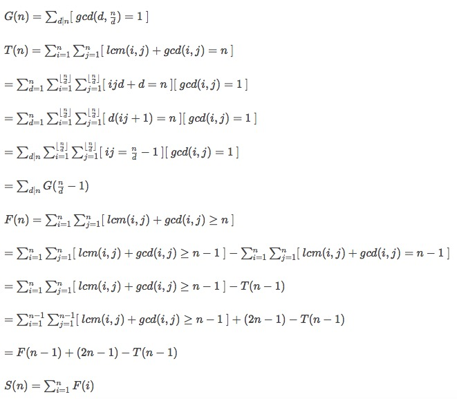

gcd经典推导 hdu 5382 2016-03-13 多校训练 中有一道数论题，推导十分强大，特此记录。 题目链接 和推导过程:代码如下: 1234567891011121314151617181920212223242526272829303132333435363738394041424344454647484950515253545556575859606162636465666768//#pragma comment(linker,"/STACK:10240000,10240000")#include <cstring>#include <cstdio>#include <cstdlib>#include <ctime>#include <cmath>#include <iostream>#include <algorithm>#include <vector>#include <map>#include <set>#include <queue>#include <stack>#include <string>#include <bitset>using namespace std;typedef long long LL;typedef pair<int,int> PII;typedef pair<LL,LL> PLL;#define clr(a,b) memset(a,b,sizeof(a))#define MP make_pair#define PB push_back#define lrt rt<<1#define rrt rt<<1|1#define lson l,m,lrt#define rson m+1,r,rrt/*------------------------- template ------------------------------*/const int M = 258280327;const int N = 1e6+6;int a[N],g[N],t[N];void init(){ for(int i=0;i<N;++i){ g[i]=1;t[i]=0; } for(int i=2;i<N;++i){ if(g[i] == 1){ for(int j=i;j<N;j+=i){ g[j]<<=1; } } } for(int i=2;i<N;++i){ for(int j=i;j<N;j+=i){ t[j]=(t[j]+g[i-1])%M; } } a[1]=1; for(int i=2;i<N;++i){ a[i]=(a[i-1]+2*i-1-t[i-1])%M; if(a[i]<0) a[i]+=M; } for(int i=2;i<N;++i){ a[i]=(a[i]+a[i-1])%M; }}int main(){ // freopen("/Users/dna049/Desktop/AC/in","r",stdin); // freopen("/Users/dna049/Desktop/AC/out","w",stdout); init(); int T; scanf("%d",&T); while(T--){ int n; scanf("%d",&n); printf("%d\n",a[n]); } return 0;} < Several trick elementary conclusions 矩阵快速幂的应用 hdu5451 >